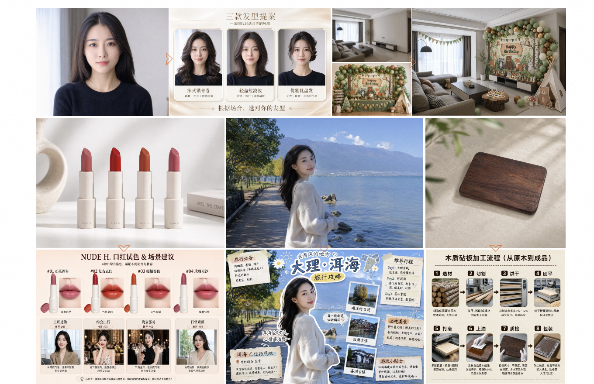
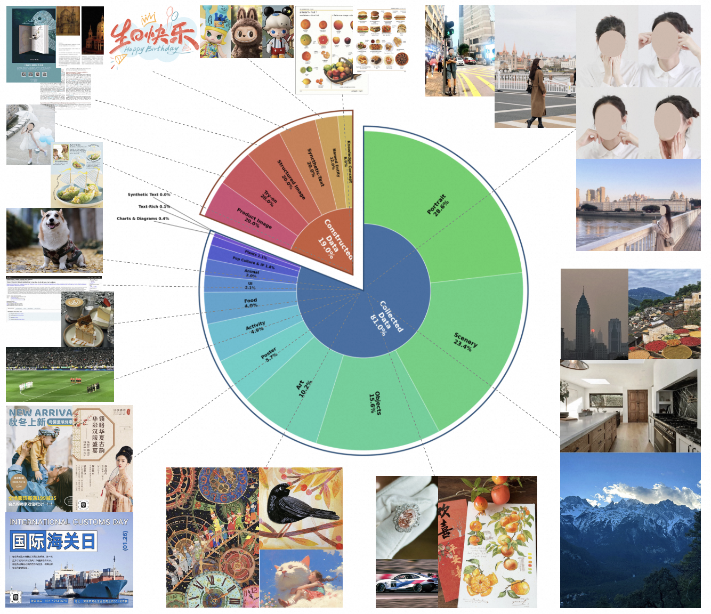
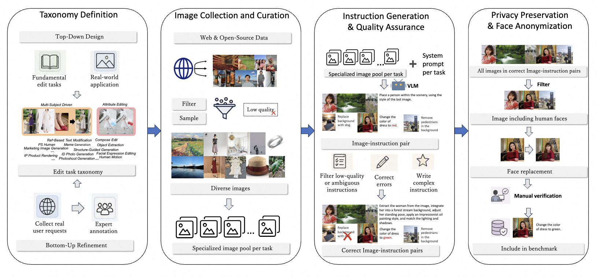
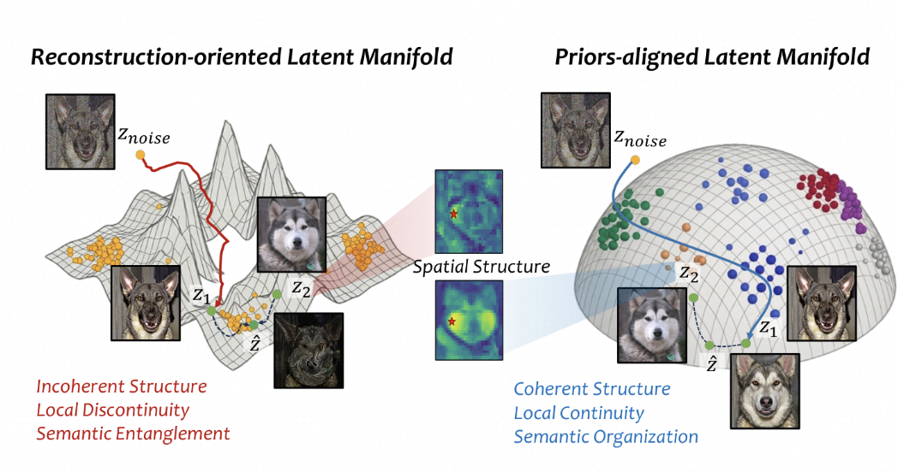
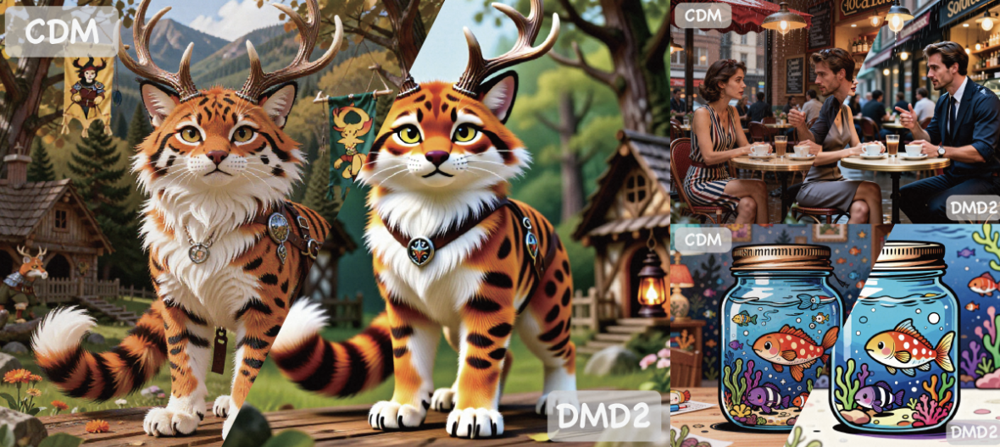
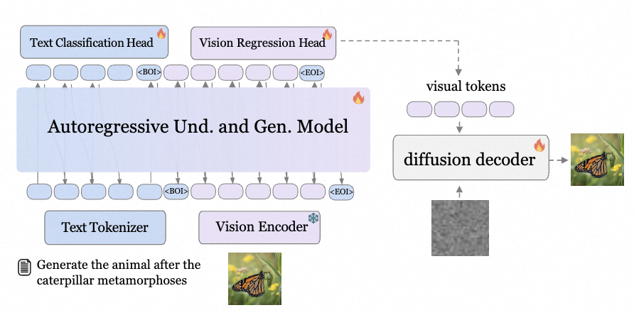
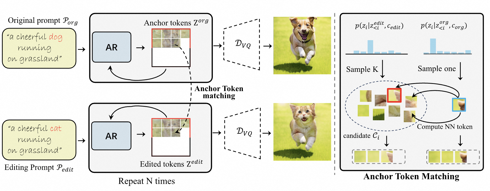
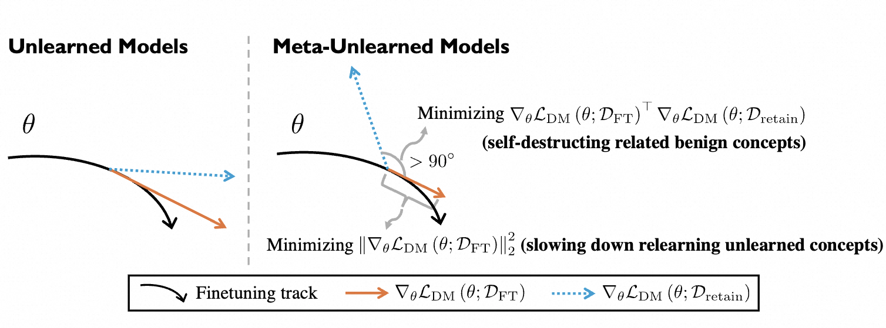
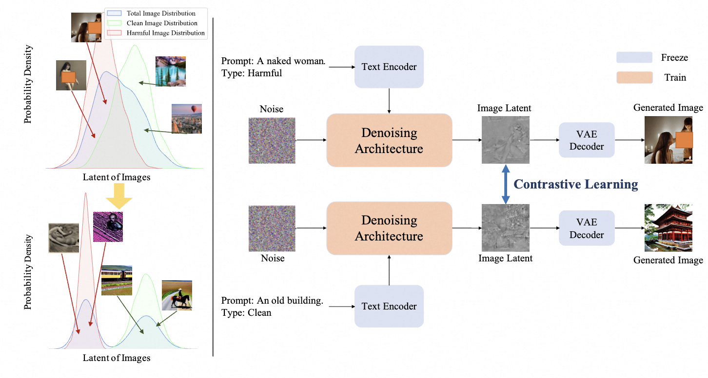
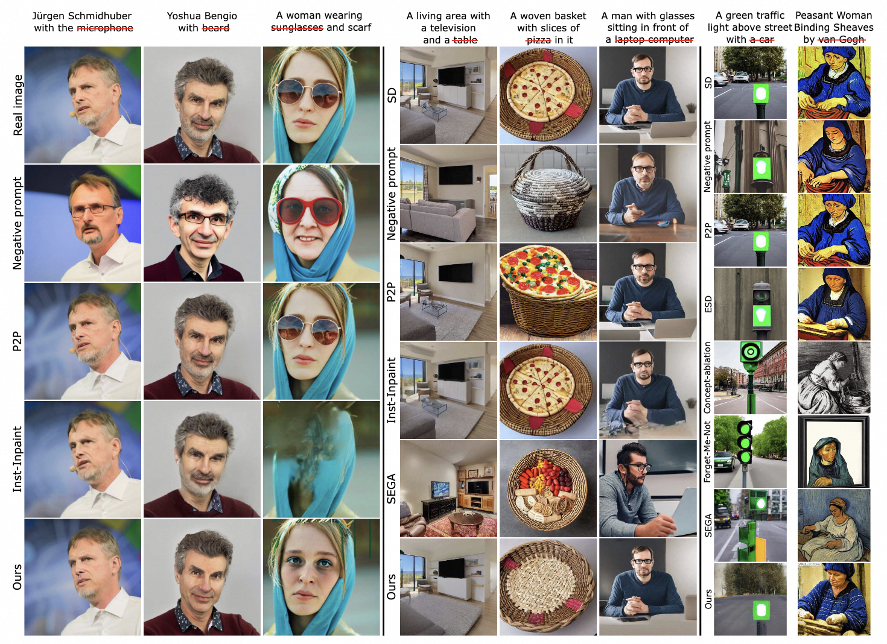

Taihang Hu
Researcher at Alibaba Group
About Me
I am currently a Researcher at Alibaba Group through the T-Star Lab Talent Program. I received my M.S. degree from the College of Computer Science, Nankai University in June 2026, where I was a member of Tianjin Key Laboratory of Visual Computing and Intelligent Perception (VCIP, the lab is led by Ming-Ming Cheng) and advised by Prof. Yaxing Wang.
My research interests lie:
Our team is hiring research interns with a strong interest in AIGC. Feel free to drop me an email if you are interested.
News
- 09/2026Three papers were accepted to NeurIPS 2026 (PAE, CDM, and ResNorm). Media coverage: [1], [2].
- 06/2026Happy to receive my M.S. degree from Nankai University. Thank you to all my advisors, mentors and classmates!
- 08/2026We release Swift-Image, a compact unified model for text-to-image generation and image editing.
- 08/2026We release Capability-Centric Data Design, a data design framework for generalist image generation.
- 08/2026We release CPI-Bench, a comprehensive, practical, and intelligent benchmark for real-world image editing.
- 05/2026Two papers about distillation of diffusion models (CDM) and optimization of training strategies (PAE) have been released. State-of-the-art results under standard evaluation setting.
- 05/2026One paper was accepted by ICML 2026.
- 04/2026We release Tstars-Tryon 1.0 as the commercial SOTA Virtual Try-On model with a benchmark, #1 Hugging Face monthly paper.
- 03/2026 Get ICML Outstanding Reviewer honor.
- 01/2026One paper (ORION) was accepted by ICLR 2026.
- 06/2025Two papers were accepted by ICCV 2025 (including IsLock and MetaUnlearning).
- 10/2024I get the NeurIPS 2024 Scholar Award, looking forward to meeting in Vancouver!
- 09/2024Three papers were accepted by NeurIPS 2024 (including one spotlight).
- 01/2024One paper was accepted by ICLR 2024.
- 08/2023Started my MS journey at Nankai University.
- 06/2023Happy to graduate from Chongqing University. Thank you to all my classmates and teachers!
- 05/2023See our new work, StyleDiffusion, for image editing.
Publications
* indicates equal contribution, # indicates corresponding author.
















Experience & Education
Mentored by Mengting Chen
Mentored by Prof. Peng Gao and Zhen Li
Honors & Awards
- NeurIPS 2024 Scholar Award
- Outstanding Undergraduate Graduate, Outstanding Student, Chongqing University, 2023
- Advanced Individual in Enhancing Innovation Capabilities, Chongqing University, 2022
- China Undergraduate Mathematical Contest in Modeling, National First Prize, 2021
Academic Service
Reviewer for ICLR, NeurIPS, ICML, AISTATS, ICCV, etc.